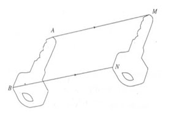
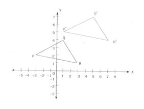
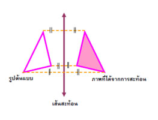
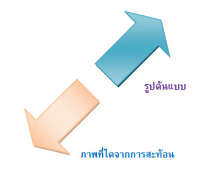
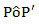
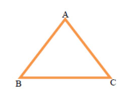
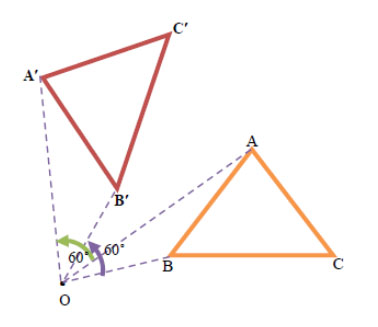

การแปลงทางเรขาคณิต เป็นเรื่องที่เกี่ยวกับการย้ายวัตถุจากตำแหน่งหนึ่งไปยังอีกตำแหน่งหนึ่ง โดยอาจมีการเปลี่ยนแปลงขนาด รูปร่าง หรือตำแหน่ง ให้ต่างไปจากเดิมหรือไม่ก็ได้ ตัวอย่างของการแปลงที่เราเคยพบเช่น รถยนต์ซึ่งเดิมอยู่บนทางลาดย้ายเข้าไปจอดในช่องจอดรถ การหมุนของเข็มยาวของนาฬิกา จากปลายเข็มยาวชี้ที่ตัวเลข 12 ไปชี้ที่ตัวเลข 6 หรือลูกโป่งที่มีอากาศอัดอยู่เมื่อปล่อยอากาศออกทำให้ลูกโป่งเคลื่อนที่ออกไปและตกลงเมื่ออากาศที่อยู่ในลูกโป่งดันออกมาจนไม่มีแรงดัน สิ่งเหล่านี้เกี่ยวข้องกับการแปลงทั้งสิ้น
สิ่งสำคัญของการแปลงคือ จุดทุกจุดของวัตถุที่อยู่ที่เดิม (หรือขนาดเดิม) จะต้องมีการส่งไปยังวัตถุที่ตำแหน่งใหม่ (หรือขนาดใหม่) ทุกจุด จุดต่อจุด
ในทางเรขาคณิตก็มีการแปลงที่กล่าวถึงความเกี่ยวข้องกันระหว่างรูปเรขาคณิตก่อนการแปลงและรูปเรขาคณิตหลังการแปลง เราเรียกรูปเรขาคณิตก่อนการแปลงว่า รูปต้นแบบ และเรียกรูปเรขาคณิตหลังการแปลงว่า ภาพที่ได้จากการแปลง
การแปลงทางเรขาคณิตที่เป็นพื้นฐานมีทั้งหมด 4 แบบ คือ การเลื่อนขนาน การสะท้อน การหมุน และการย่อ / ขยาย แต่ในที่นี้จะกล่าวถึงการแปลงทางเรขาคณิต 3 แบบ ได้แก่ การเลื่อนขนาน การสะท้อนและการหมุน การแปลงทางเรขาคณิตทั้งสามแบบนี้จะได้ภาพที่มีรูปร่างเหมือนกันและขนาดเดียวกันกับรูปต้นแบบเสมอ
การเลื่อนขนานบนระนาบเป็นการแปลงทางเรขาคณิตที่มีการเลื่อนจุดทุกจุดไปบนระนาบตามแนวเส้นตรงในทิศทางเดียวกันและเป็นระยะเท่ากันตามที่กำหนด
รูปลูกกุญแจจะเคลื่อนที่ไปในทิศทางตามลูกศรโดยที่รูปร่างและขนาดไม่เปลี่ยนแปลง จากรูปจะเห็นว่า AM และ BN ยาวเท่ากันและขนานกัน
1. รูปที่ได้จากการเลื่อนขนานกับรูปต้นแบบเท่ากันทุกประการ
2. จุดแต่ละจุดที่สมนัยกันบนรูปที่ได้จากการเลื่อนขนานกับรูปต้นแบบจะมีระยะห่างเท่ากัน
3. ภายใต้การเลื่อนขนาน จะไม่มีการเปลี่ยนแปลงรูปร่างและขนาดของรูปต้นแบบ
ตัวอย่าง จุดยอดของรูป ΔPQR คือ P(-3, 2) Q( 1, 4) และ R(3, 1)
จงสร้างรูป ΔPQR แล้ววาดรูป สามเหลี่ยมที่เกิดจากการเลื่อนขนานไปทางขวา 4 หน่วย และขึ้นบน 3
หน่วย
วิธีคิด หาค่าพิกัดของจุดยอดของรูปสามเหลี่ยมใหม่ ดังนี้
จุดยอดเดิม ไปทางขวา 4 ขึ้นบน 3 จุดยอดใหม่
P(-3, 2) + (4, 3) => P′(1, 5)
Q(1, 4) + (4, 3) => Q′(5, 7)
R(3, 1) + (4, 3) => R′(7, 4)
ค่าพิกัดของจุดยอดใหม่ คือ P′(1, 5) , Q′(5, 7) , R′(7, 4) เขียนกราฟของจุด P′, Q′ และ R′แล้ววาดรูป Δ P′ Q′ R′ ดังนี้
การสะท้อนบนระนาบเป็นการแปลงทางเรขาคณิตที่มีเส้นตรง l ที่ตรึงเส้นหนึ่งเป็นเส้นสะท้อน แต่ละจุด P บนระนาบจะมีจุด P' เป็นภาพที่ได้จากการสะท้อนจุด P โดยที่
1. ถ้าจุด P ไม่อยู่บนเส้นตรง l แล้วเส้นตรง l จะแบ่งครึ่งและตั้งฉากกับ PP'
2. ถ้าจุด P อยู่บนเส้นตรง l แล้วจุด P และจุด P' เป็นจุดเดียวกัน
1. รูปต้นแบบกับภาพที่ได้จากการสะท้อน สามารถทับกันได้สนิทโดยต้องพลิกรูป หรือกล่าวว่า
รูปต้นแบบและภาพที่ได้จากการสะท้อนเท่ากันทุกประการ
2. ส่วนของเส้นตรงที่เชื่อมจุดแต่ละจุดบนรูปต้นแบบ กับจุดที่สมนัยกันบนภาพที่ได้จากการสะท้อนจะขนานกัน
รูปเรขาคณิตที่สามารถหารอยพับและพับรูปทั้งสองข้างของรอยพับให้ทับกันสนิทได้เรียกว่า รูปสมมาตรบนเส้น และเรียกรอยพับนี้ว่า แกนสมมาตร รูปสมมาตรบนเส้นแต่ละรูปอาจมีจำนวนแกนสมมาตรไม่เท่ากัน
เส้นสะท้อน (แกนสมมาตร) จะแบ่งครึ่งและตั้งฉากกับส่วนของเส้นตรงที่เชื่อมระหว่างจุดแต่ละจุดบนรูปต้นแบบกับจุดแต่ละจุดบนรูปสะท้อนที่สมนัยกัน
สรุปได้ว่ารูปที่เกิดจาการสะท้อนก็คือรูปสมมาตรบนเส้น โดยมีเส้นสะท้อนคือแกนสมมาตรนั่นเอง

การสะท้อนบนระนาบ วางรูปต้นแบบไว้ด้านใดด้านหนึ่งของเส้นสะท้อน
ถ้าเส้นสะท้อนเป็นแกน Y พิกัดของภาพที่เกิดจากการสะท้อน คือการเปลี่ยนเครื่องหมายของสมาชิกตัวหน้าเป็นเครื่องหมายตรงข้ามทุกจุดของรูปต้นแบบ ส่วนสมาชิกตัวหลังให้คงเดิมไว้
ถ้าเส้นสะท้อนเป็นแกน X พิกัดของภาพที่เกิดจากการสะท้อน คือการเปลี่ยนเครื่องหมายของสมาชิกตัวหลังเป็นเครื่องหมายตรงข้ามทุกจุดของรูปต้นแบบ ส่วนสมาชิกตัวหน้าให้คงเดิมไว้
ถ้าเส้นสะท้อนขนานแกน X หรือแกน Y ให้นับช่องตารางหาระยะระหว่างจุดที่กำหนดให้กับเส้นสะท้อนซึ่งภาพของจุดนั้นจะอยู่ห่างจากเส้นสะท้อนเป็นระยะที่เท่ากันกับระยะที่นับได้เมื่อได้ภาพของจุดนั้นแล้วจึงหาพิกัด
ถ้าเส้นสะท้อนไม่ขนานแกน X และไม่ขนานกับแกน Y แต่เป็นเส้นในแนวทแยง ให้ลากเส้นตรงผ่านจุดที่กำหนดให้และตั้งฉากกับเส้นสะท้อน ภาพของจุดที่กำหนดให้จะอยู่บนเส้นตั้งฉากที่สร้างขึ้นและอยู่ห่างจากเส้นสะท้อนเป็นระยะเท่ากันกับจุดที่กำหนดให้อยู่ห่างจากเส้นสะท้อน เมื่อได้ภาพของจุดนั้นแล้วจึงหาพิกัด

การหมุนบนระนาบเป็นการแปลงทางเรขาคณิตที่มีจุด O เป็นจุดที่ตรึงอยู่จุดหนึ่งเรียกว่า O ว่า จุดหมุน แต่ละจุด P บนระนาบ มีจุด P' เป็นภาพที่ได้จากการหมุนจุด P รอบจุด O ตามทิศทางที่กำหนดด้วยมุมที่มีขนาด K โดยที่
1. ถ้าจุด P ไม่ใช่จุด O แล้ว OP = OP^' และขนาดของ
 เท่ากับ K
2. ถ้าจุด P เป็นจุดเดียวกันกับจุด O แล้ว P เป็นจุดหมุน
1. สามารถเลื่อนรูปต้นแบบทับภาพที่ได้จากการหมุนได้สนิท โดยไม่ต้องพลิกรูปหรือกล่าวว่า
รูปต้นแบบกับภาพที่ได้จากการหมุนเท่ากันทุกประการ
2. ส่วนของเส้นตรงบนรูปต้นแบบและภาพที่ได้จากการหมุนส่วนของเส้นตรงนั้นไม่จำเป็นต้องขนานกันทุกคู่
หรืออาจกล่าวได้ว่า จุดบนรูปต้นแบบและภาพที่ได้จากการหมุนจุดนั้น
แต่ละคู่อยู่บนวงกลมเดียวกันและมีจุดหมุนเป็นจุดศูนย์กลาง แต่วงกลมเหล่านี้ไม่จำเป็นต้องมีรัศมียาวเท่ากัน
การหมุนจะหมุนทวนเข็มหรือตามเข็มนาฬิกาก็ได้ จุดหมุนจะเป็นจุดที่อยู่บนรูปหรือนอกรูปก็ได้ โดยที่จุดแต่ละจุดบนรูปต้นแบบเคลื่อนที่รอบจุดหมุนด้วยขนานของมุมที่กำหนด
ตัวอย่าง กำหนดให้ ∆A'B'C' เป็นภาพที่เกิดจากการหมุนรูป ∆ABC ตามเข็มนาฬิกาเป็นมุม 60 องศา โดยที่ A เป็นจุดหมุน และหมุนทวนเข็มนาฬิกาเป็นมุม 60 องศา โดยมีจุด O เป็นจุดหมุนที่ไม่อยู่บนรูปต้นแบบ

วิธีทำ
กรณีที่ A อยู่บนรูปต้นแบบและเป็นจุดหมุน
พิจารณาด้าน AC สร้างมุม CAC' กาง 60 องศาในทิศตามเข็มนาฬิกา
แล้วลากด้าน AC' ให้มีความยาวเท่ากับด้าน AC
ในทำนองเดียวกันสร้างมุม BAB' กาง 60 องศา ในทิศตามเข็มนาฬิกา
และลากด้าน AB' ให้มีความยาวเท่ากับด้าน AB แล้วลากด้าน B'C'
กรณีที่จุดหมุน O ไม่อยู่บนรูปต้นแบบ ลากเส้น AO และ BO สร้างมุม AOA' กาง 60 องศา ในทิศทวนเข็มนาฬิกา ลากเส้น OA' ให้มีความยาวเท่ากับด้าน OA
ในทำนองเดียวกัน สร้างมุม BOB' ทิศทวนเข็มนาฬิกากาง 60 องศา ลากเส้น OB' ให้มีความยากเท่ากับด้าน AB ลากเส้นตรงเชื่อม B'C'
